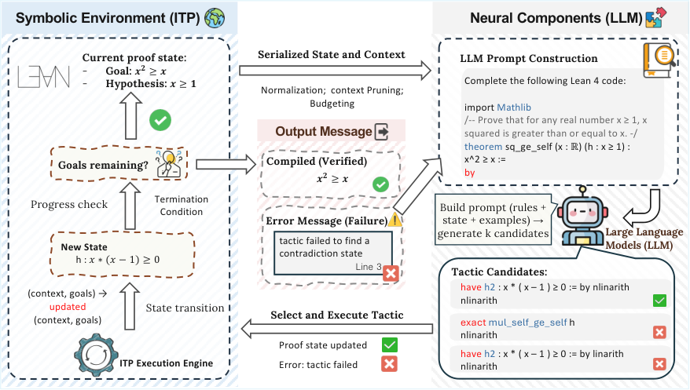
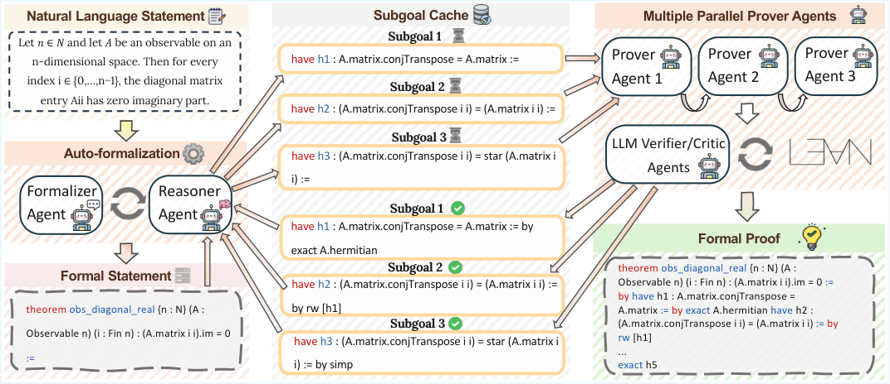
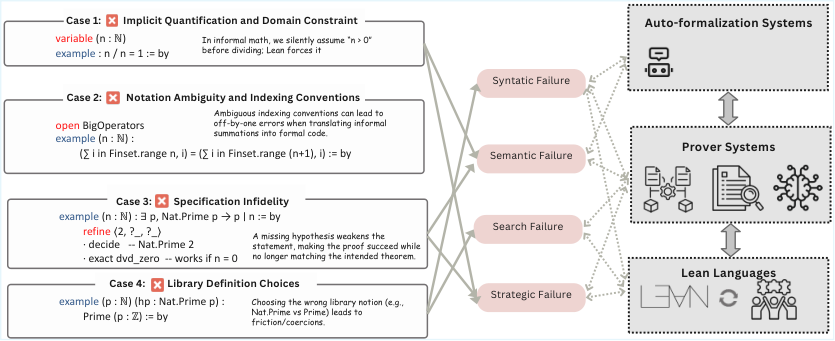

Surveys LLM-based formal theorem proving, which is largely built on Lean 4 and Mathlib: Lean provers, datasets, benchmarks and tools such as LeanDojo.
Abstract
Recent developments in AI for Mathematics (AI4Math), especially Large Language Model (LLM)-driven theorem provers, has achieved remarkable success in formal proof generation for well-defined mathematical problems through Interactive Theorem Proving (ITP) languages. However, current systems remain fundamentally limited in tackling frontier research mathematics, such as discovering new theorems or resolving open conjectures, which are often open-ended, under-specified, and involve multiple layers of abstraction. We argue that the next leap in AI4Math systems requires a decisive shift from predefined problem-solvers to research agents that can address frontier mathematical challenges with rigorous formal mathematical reasoning. In this position paper, we provide a systematic review of the field, covering datasets, auto-formalization, and proof synthesis. More importantly, we identify core limitations of existing systems in serving as mathematical research agents, examining issues across datasets, relational structure, mathematical exploration, tool ecosystem, and human-AI collaboration, outlining a strategic road-map for the future of AI4Math.
Problem
LLM-driven theorem provers excel at well-defined, competition-level formal problems. They remain limited for frontier research mathematics, which is open-ended, under-specified and multi-layered in abstraction.
Approach
A position paper and systematic review covering the history of automated theorem proving, interactive theorem provers (with Lean 4 and Mathlib as the dominant platform), datasets, autoformalization and proof synthesis. Methods are organized by training strategy, test-time adaptation and agentic design. It then analyzes open challenges in five areas: data, relational structure, exploration, tool ecosystems, and human-AI collaboration.

Figure 1: The Neuro-Symbolic Interaction Loop. This diagram illustrates the iterative workflow where the Symbolic Environment (ITP) maintains the logical state and provides verifiable feedback (progress, errors, or completion), while the Neural Component (LLM) acts as a generative policy to construct prompts and predict tactic candidates based on the serialized context.

Figure 5: Agentic formal theorem proving with subgoal caching and parallel verification An illustrative workflow in which a natural-language mathematical statement is autoformalized into a formal theorem, decomposed by a planner into intermediate subgoals, and solved via multiple parallel prover agents.
Results
The review documents saturation of MiniF2F-test, rising from about 30% in 2021 to 99.6% by Seed-Prover in 2025. It also catalogs IMO and Erdős-problem results. From these it proposes a road-map for moving from problem-solving systems to mathematical research agents.

Figure 10: Common failure cases in LLM-driven formal mathematics. Illustrative examples of how errors introduced during translation and proof construction (e.g., missing implicit constraints, ambiguous notation/indexing, specification drift, or mismatched library choices) propagate into different downstream failure types (syntactic, semantic, search, and strategic) across autoformalization, prover